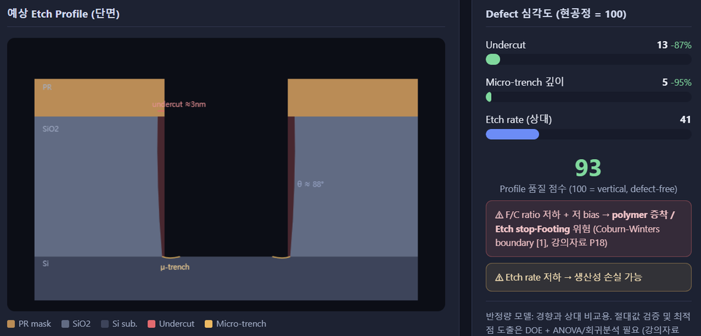
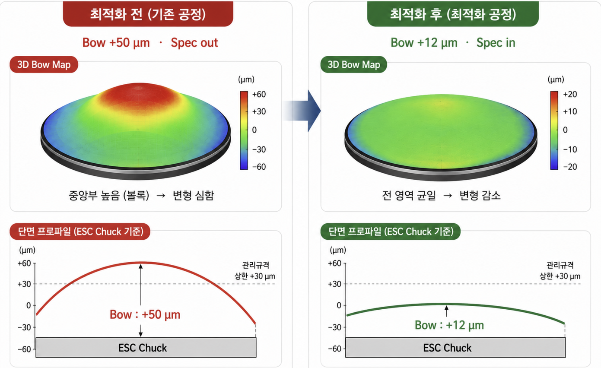
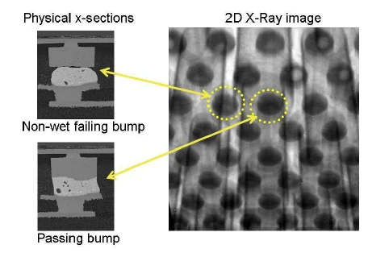
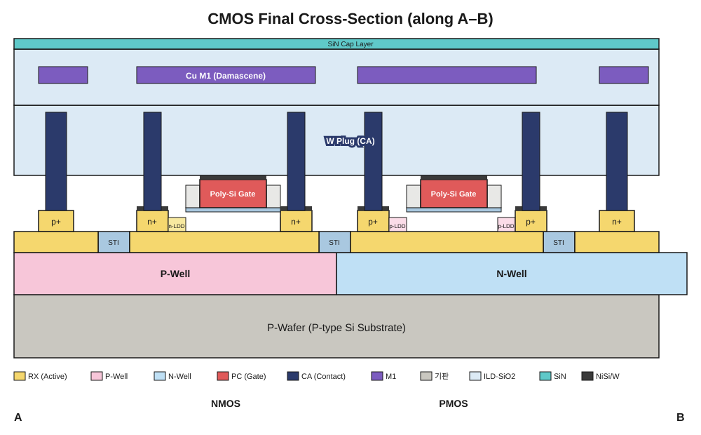

← 프로젝트 목록으로
Research · SK하이닉스 청년 Hy-Po
SK하이닉스 청년 Hy-Po 팀 프로젝트 (6건)
SK하이닉스 청년 Hy-Po 프로그램(10주·360시간)에서 A-1조 7인 팀으로 진행한 반도체 불량 원인분석·공정최적화 프로젝트 6건입니다. 8D Report·4M·5-Why·DOE·ANOVA 등 실무 방법론을 적용해 DRAM 소자 신뢰성부터 Etch·Doping 공정, HBM UBM·Bump 결함, 후공정 Dicing, CMOS 소자 설계까지 다뤘습니다. 팀 프로젝트 우수상을 수상했습니다.

DRAM Data Retention 불량 개선
Fail Bit Rate 350ppm(관리기준 3.5배)의 근본원인을 GIDL로 규명

Etch Profile 이상 원인분석
DOE로 Undercut 87%·Micro-trench 95% 저감

Doping Process Wafer Bow 불량 개선
DOE로 Bow 50μm→12μm 저감

HBM UBM·µBump 결함 원인분석
Kirkendall Void·Wetting 등 4대 Defect 근본원인 규명 및 해결방안 도출

Micro-crack·Internal Crack 원인분석
냉각 조건 최적화로 열응력 450→80MPa 저감

CMOS 공정설계
Contact(W-Plug)~M1(Cu Damascene) 통합 단면 구조 완성